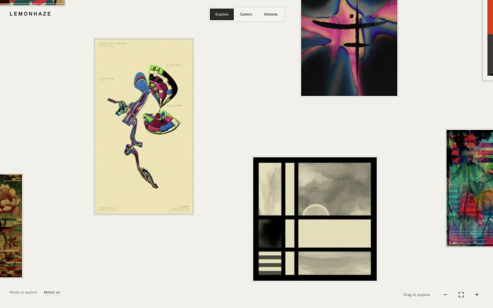
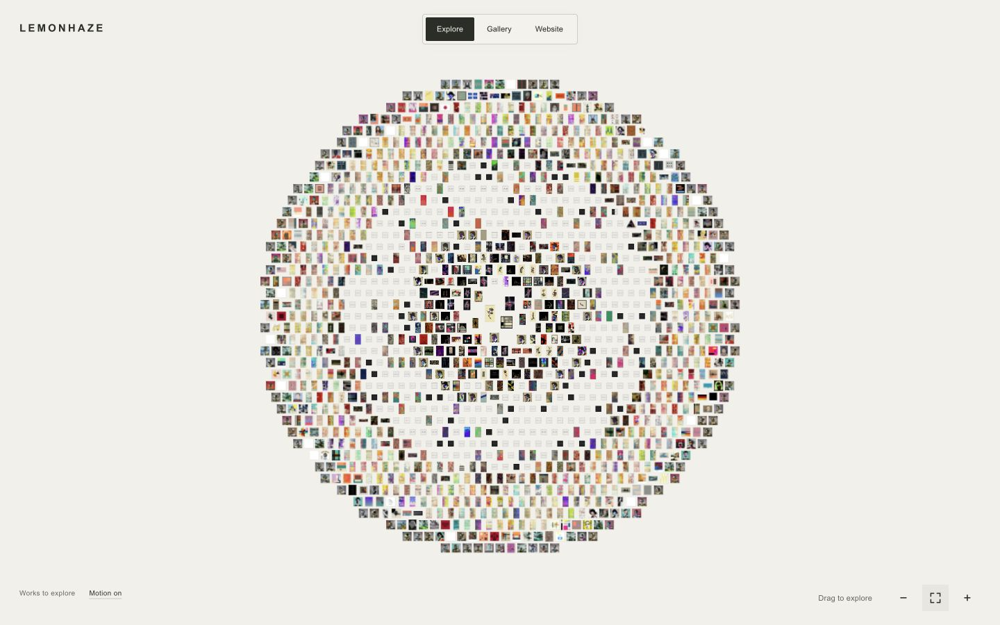
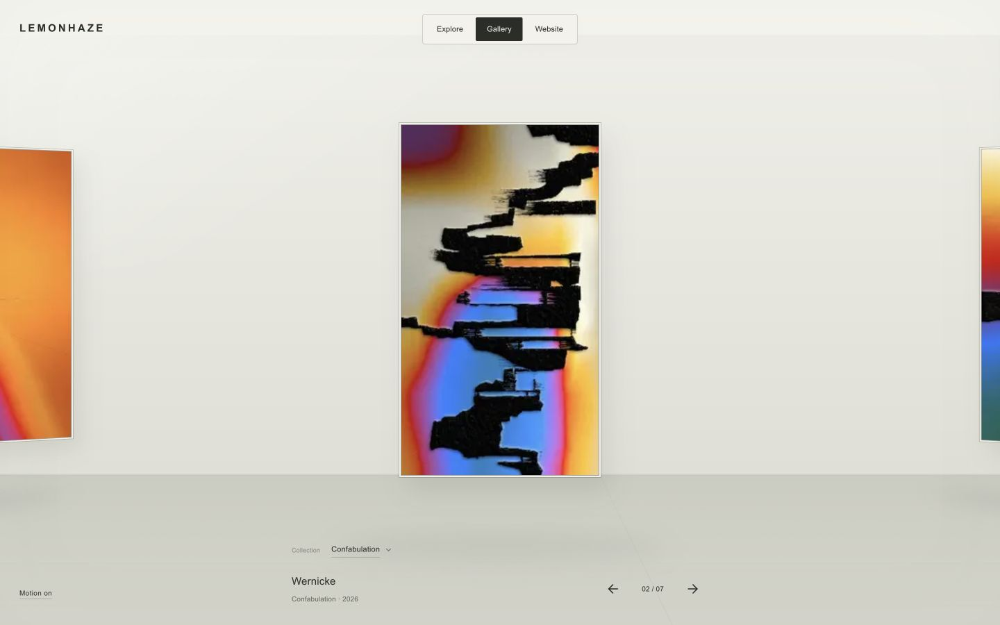
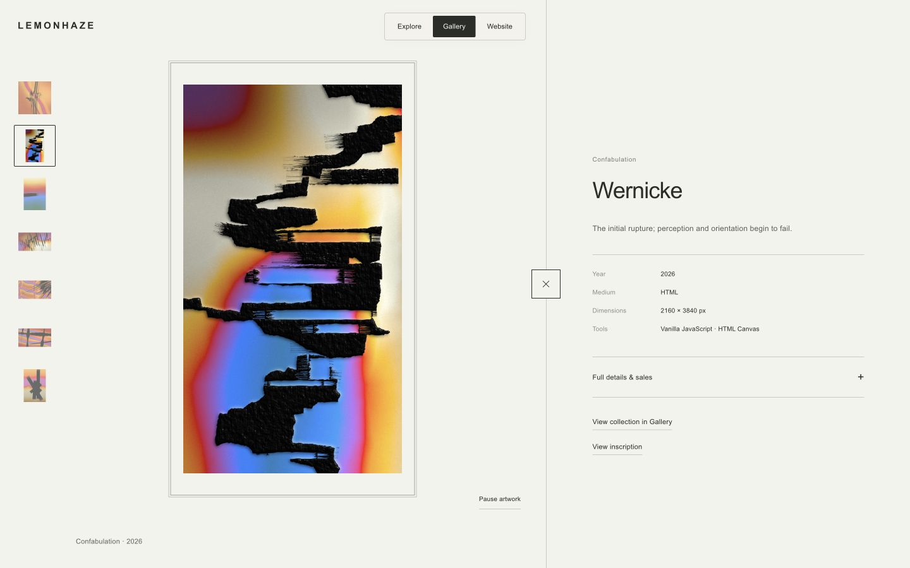
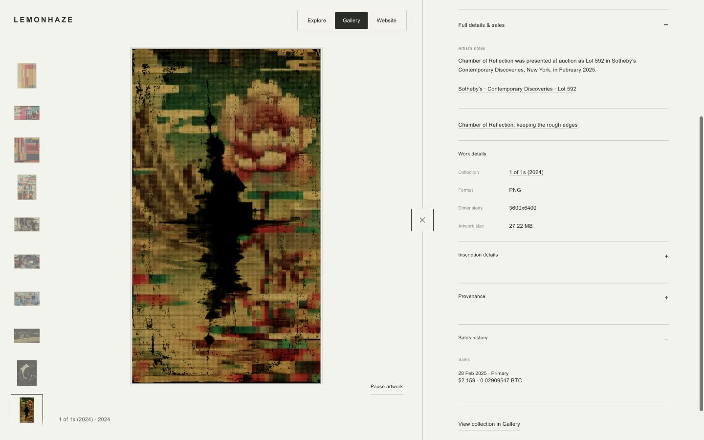
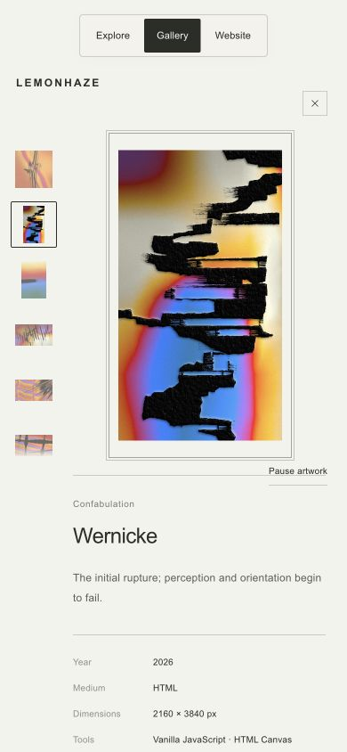
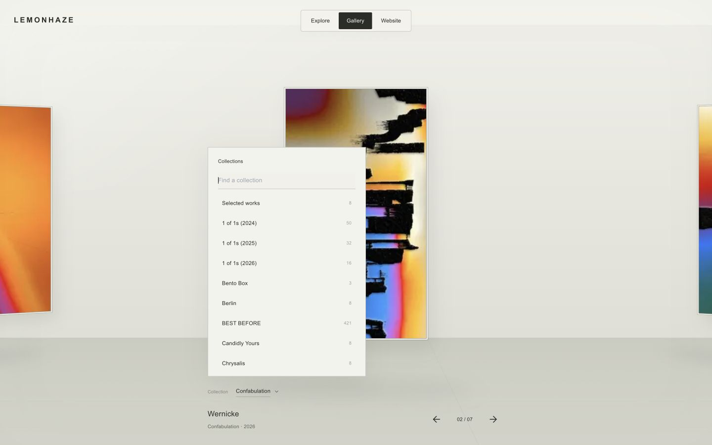
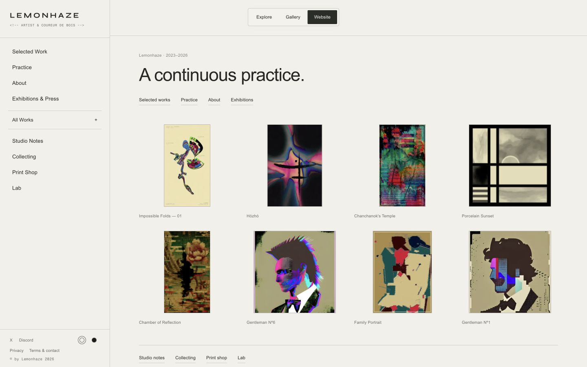
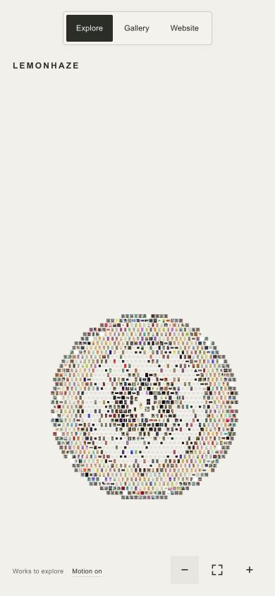
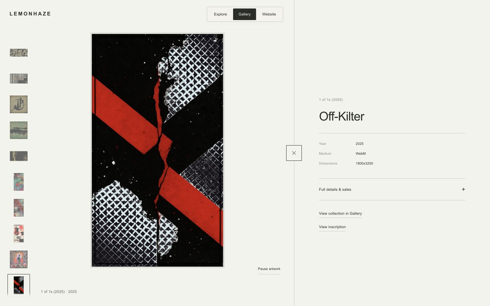

Explore — approved landing
Original artwork placements and native proportions retained.

Explore — complete field
All 1,414 original-work previews loaded; no failed images.

Gallery — stable previews
Browsing keeps a single preview; high-resolution/live content belongs to solo view.

Solo artwork + metadata
Wernicke with its work-specific reflection and expandable full details.

Full details and sales
Chamber of Reflection: artist notes, inscription records, provenance and sales inside the split.

Mobile artwork view
Smaller visible close square with an accessible tap target and clear space above the art.

Gallery collection chooser
Searchable collection list with counts; new collections enter at their midpoint.

Website home
Switching from an artwork returns home. Persistent mode switch and all sections remain available.

Mobile field after dragging
Whole-group containment and zoom-out below the overview size.

Older work — live original
Off-Kilter from the Trilogy selection, playing in solo view.